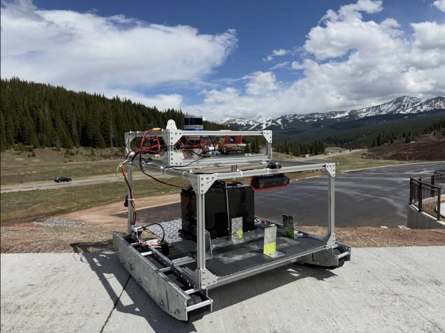
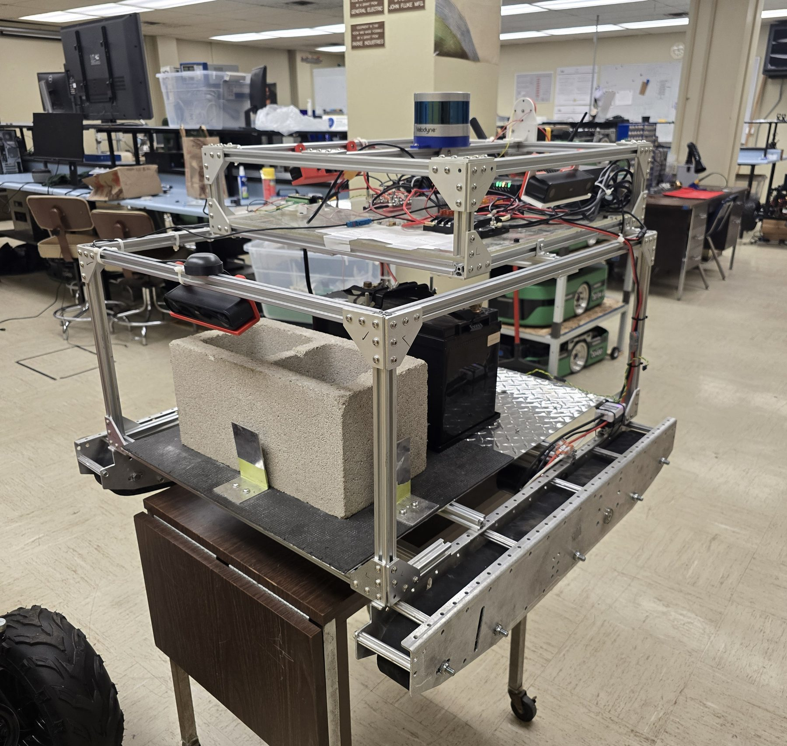
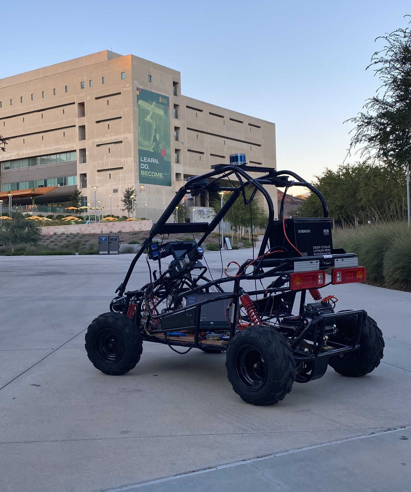
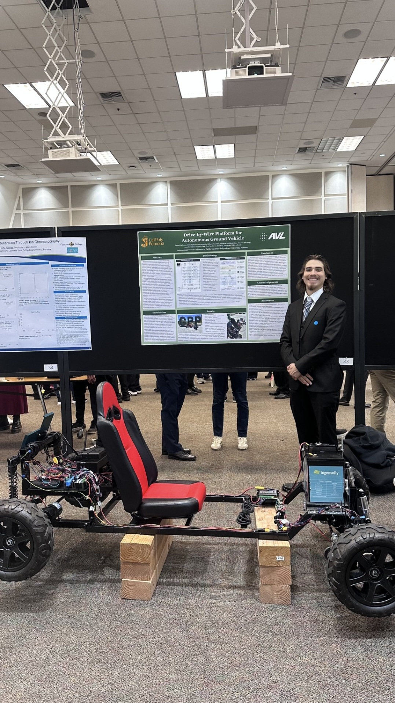
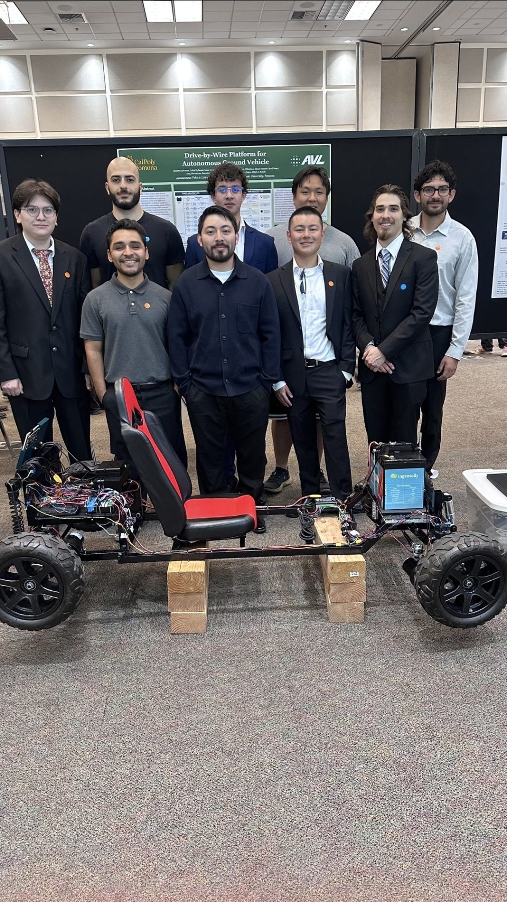

IGVC Competition MARVIN


MARVIN is AVL's entry for the Intelligent Ground Vehicle Competition. The platform uses a camera-only perception stack on ROS 2 Humble, running on an NVIDIA Jetson Orin Nano with three ZED X stereo cameras. TwinLiteNet segmentation and YOLOv8 detection are fused into a bird's-eye occupancy costmap for Nav2 MPPI local control.
A MATLAB Simulink and Simscape digital twin is used to develop vehicle-dynamics and waypoint-following before hardware tests. MARVIN is also the vehicle behind the lab's haptic teleoperation work, so competition navigation and remote driving share the same platform.
Focus Areas
- Camera-based perception and Nav2 at IGVC
- ROS 2 Humble on Jetson Orin Nano
- Vehicle-dynamics simulation in MATLAB
- Competition course validation
AVL-002 (AV2)


AV2 is the lab's main autonomous platform for integrating and validating perception, planning, and low-level control research. The project emphasizes stable software deployment, reproducible experiments, and robust behavior in campus-like environments.
Current work includes improving sensor fusion quality, refining control smoothness, and expanding scenario coverage for day/night driving conditions.
Focus Areas
- Perception and planning pipeline hardening
- Data logging and experiment tracking
- Day/night driving scenario coverage
- Closed-loop autonomy validation
Car 1 / Carl


Carl is an electric go-kart AVL is converting into a drive-by-wire research platform. A 24 V distributed control network uses an STM32 NUCLEO-F767ZI master and Teensy 4.1 nodes to command four wheel motors over CAN 2.0, with encoder feedback for speed estimation and closed-loop control.
A Jetson Nano sits onboard for wireless access, data logging, and the path to autonomy. High-level commands reach the STM32 over UART; the master then arbitrates throttle and steering onto the CAN bus. Phase 1 is electronic drive-by-wire. Phase 2 adds perception, localization, and planning.
Focus Areas
- CAN-based drive-by-wire throttle and steering
- Distributed embedded control (STM32 + Teensy)
- 24 V power architecture and motor drive
- Onboard Jetson Nano for future autonomy